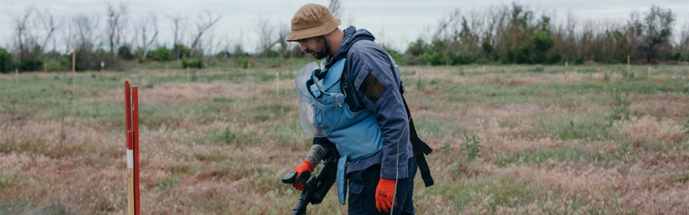
“We will sow wheat and grow bread”: pitfalls of humanitarian demining in Ukraine
15.07.26
Andrii wakes up at half past five in the morning: he has to travel more than 50 km every day to get to work; in summer, his shift starts at eight. Having evacuated from then-occupied Kherson, where he had been working as a computer science teacher, he and his family moved to the Kirovohrad region; later, they decided to move closer to home, to Mykolaiv.
When his school switched to online learning, it was difficult for Andrii: constant online calls and meetings, working from home, and the inability to see students in person and talk to colleagues weighed him down. “It feels like you’re always at home, but you’re not really at home.” So he began to consider a radical career shift.
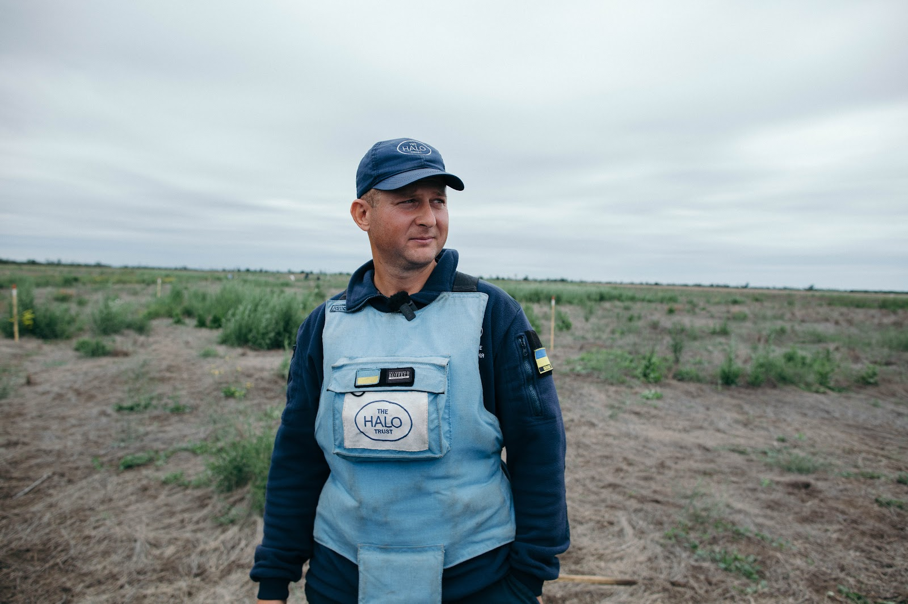
Today, Andrii operates a Scorpion mine detector at the international organization The HALO Trust, which works on humanitarian demining in Ukraine to enable civilians to safely use their land. We met him at work in Vasylky, which was deoccupied in 2022.
“Our main sensor is this frame that scans the area square after square. Then we process those signals. I scan the whole area, collect files, send them to my laptop, and process them,” Andrii explains.
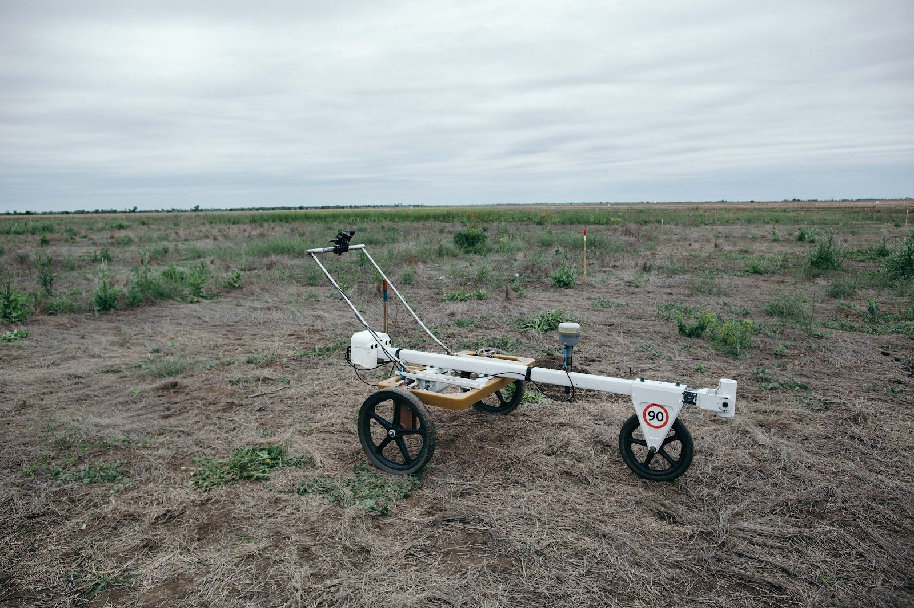
To target explosives more precisely and avoid wasting time on safe objects like tin cans or debris, the device is set up each time to search for a specific amount of metal. In this area, they are looking for anti-vehicle mines; there are no anti-personnel mines here.
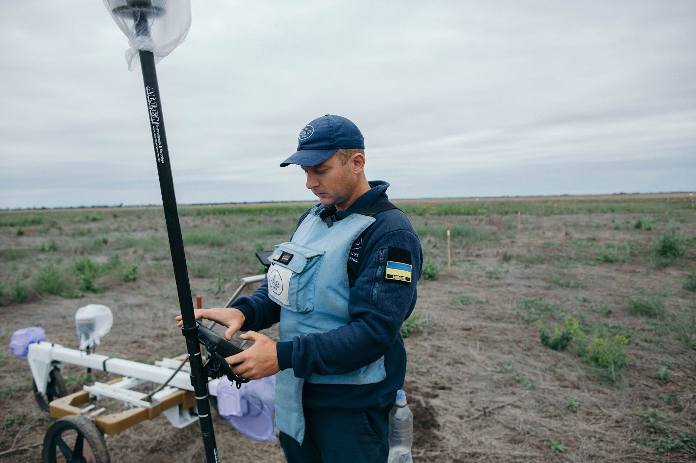
It wasn’t hard to learn how to operate the detector, he says; experience from his previous job helped him figure everything out. He passed the tests required to work with the Scorpion on his first try, which isn’t common.
Andrii is looking for traces of mines invisible to the naked eye. Scorpion’s advantage is that it can operate in an area thickly covered by plants; it’s impossible to do so by any other demining methods.
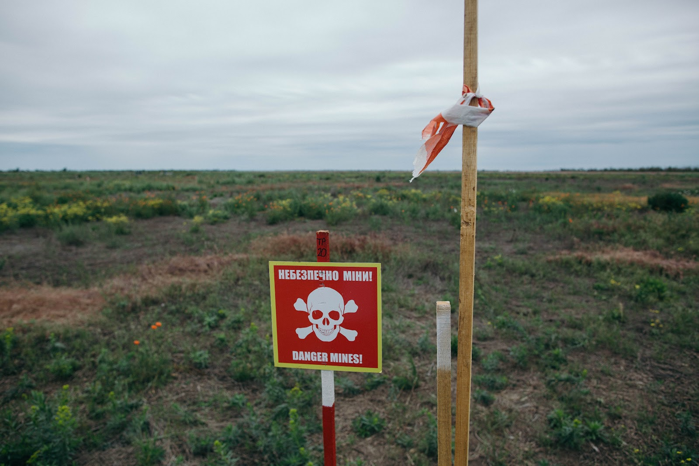
This isn’t, however, the first stage of clearing the land. His colleagues have already worked in this area: “If there’s something on the surface, the surface clearance method is used. We search deeper and scan for what’s hidden in the soil.”
A manual mine clearance team is working on a neighboring spot. They warn us to use only marked paths to approach. It’s hazardous to walk in the areas that aren’t marked by wooden poles of the proper color.
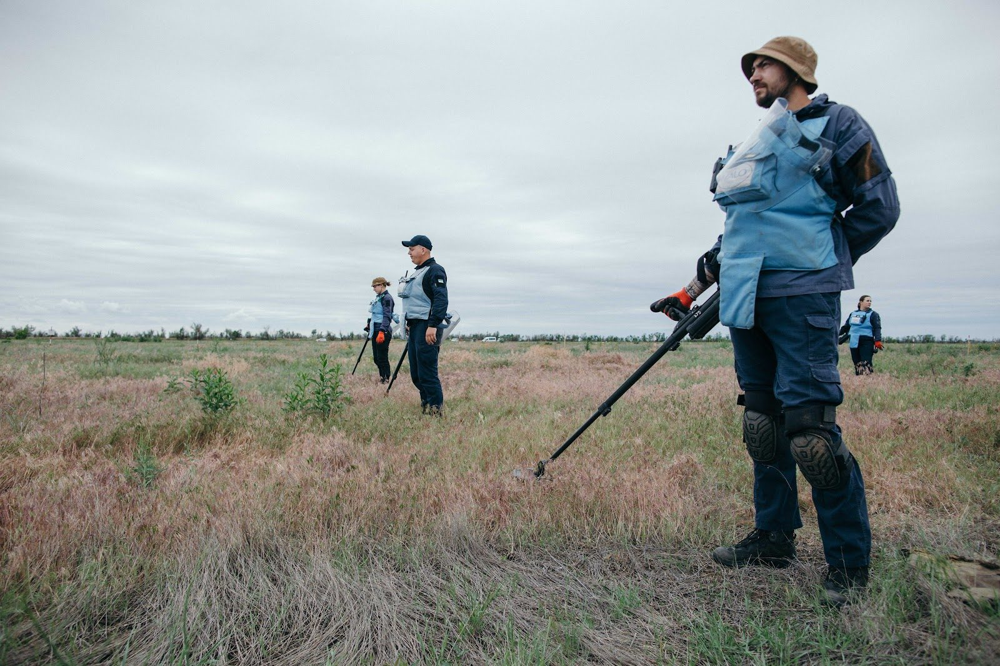
We watch them from afar: it’s a tedious and difficult job. All day, the team sweeps the area in front of them with their detectors in unison, following the team leader’s orders. They pass everything they find to him. They work for 50 minutes, then take a 10-minute break.
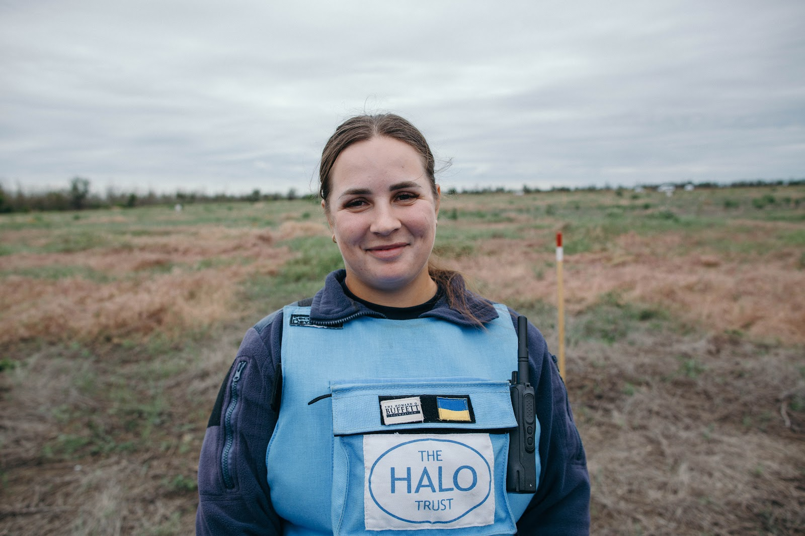
Deminer Viktoria, who moved to Mykolaiv from Ochakiv¹, has been working like this for almost a year. Her career path is similar to Andrii’s: she worked in education as a primary school teacher. Financial incentive wasn’t her main motivation, she says: “There are other jobs that are paid equally.”
“A teacher’s job is important. But clearing the land and bringing the fields and jobs back to the people is no less important. When your friends have houses in the temporarily occupied territories, and your parents have their house [in Ochakiv] under constant shelling, this job feels more important,” she explains.
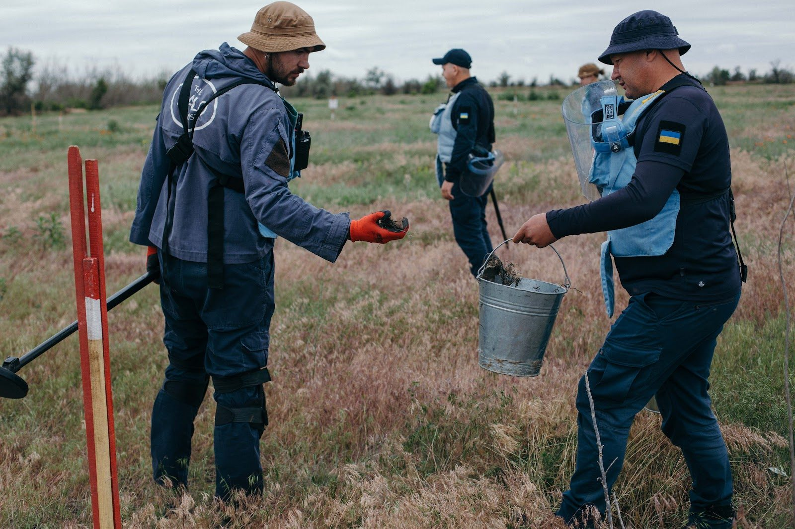
Half-jokingly, I ask Viktoria what’s harder: teaching children or clearing mines. She answers quite seriously: it’s difficult to compare, but physical work is easier. Given her experience, she tried her hand at the team that teaches mine safety rules to the population, but returned to the fields. “Teaching is important, but someone still has to do the manual job,” she explains.
Viktoria hasn’t found many dangerous objects in this particular area. But over the course of her career, she most often encountered ammunition for multiple launch rocket systems. “When you remove the grass and think that you see a dangerous object, you’re careful with it; you call your team leader, and they tell you what to do next in more detail,” she explains about her current work.
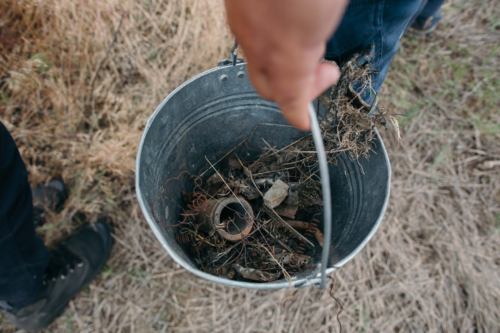
They mark potentially dangerous objects and wait for a team that handles explosive disposal. The job is scary at first, but then you get used to it, Viktoria admits. “Living is scary in general. You never know whether you’ll wake up tomorrow. So, with each day, fear subsides.”
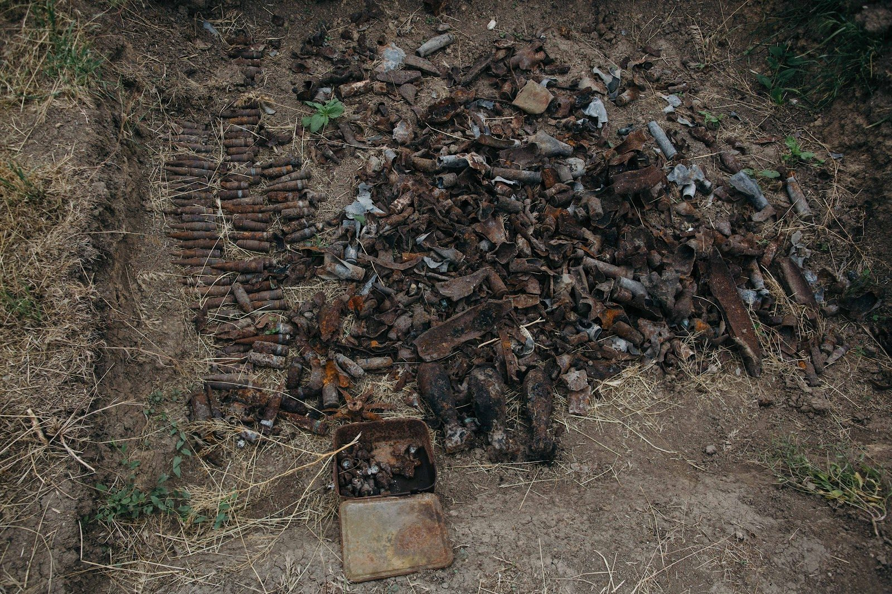
After a thorough inspection, dangerous objects are handed over for disposal. Everything is done with remote-controlled equipment; no one touches anything.
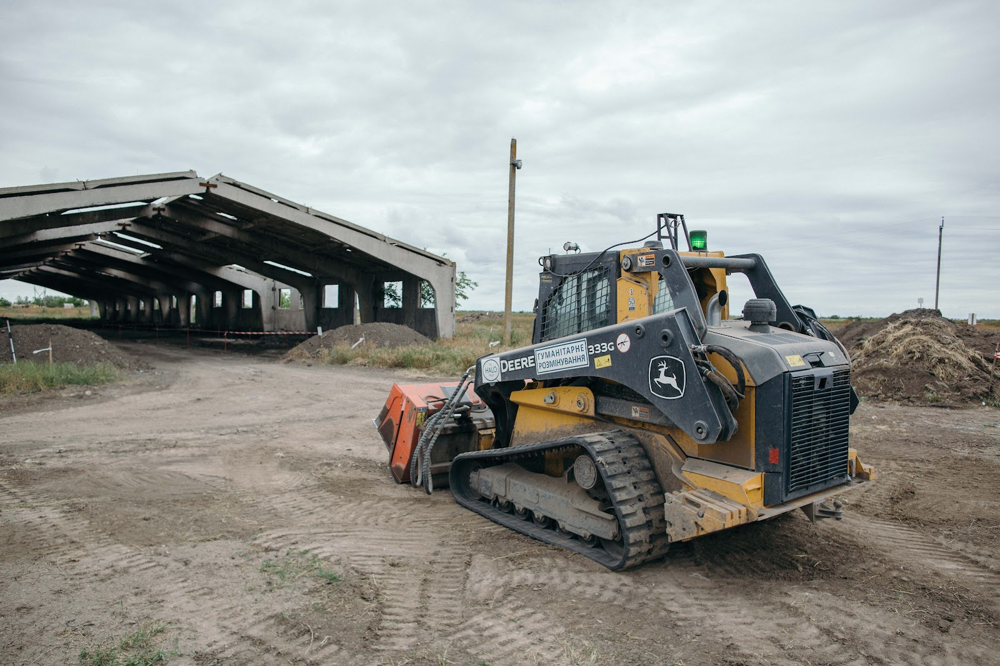
When we reach the utilization spot, the equipment is idle — nothing to be exploded. Team leader Oleksii Mykhailiuk, however, promises to show us how the skid steer loader operates in soils where explosive objects may be hidden. Oleksii worked earlier as Deputy Shop Foreman at the turbine manufacturing plant in Mykolaiv; he talks about the loader almost excitedly: “It’s universal. I think it’s the best device.”
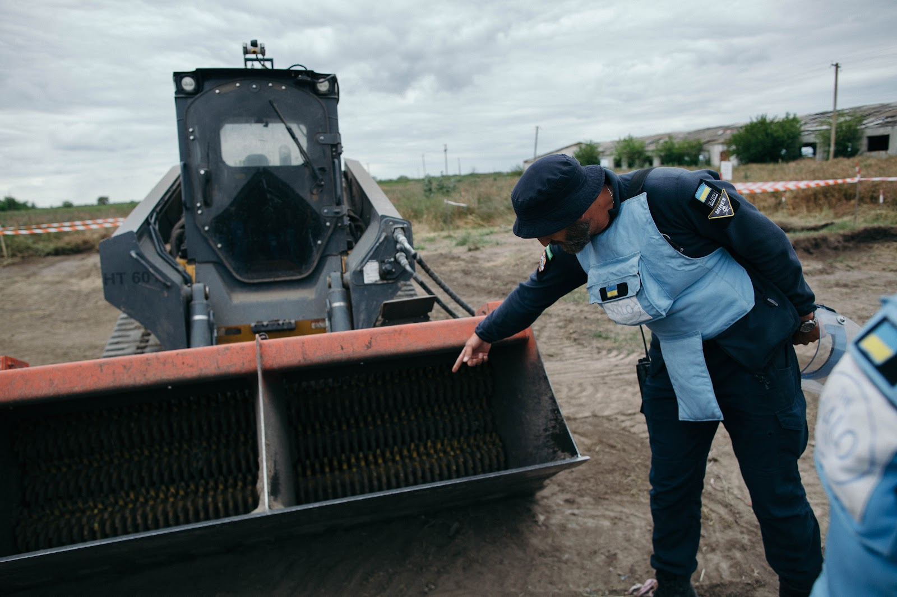
“It has various work attachments. You see one of them. It’s a bucket-type attachment. It also has an attachment for mowing the grass, if eliminating its upper layer is necessary. It has an attachment for moving through trees — it can cut them. Where can’t you use it? Where there’s a hazard of anti-vehicle mines. The mine may damage the bucket, I guess, but the vehicle itself probably won’t suffer.”
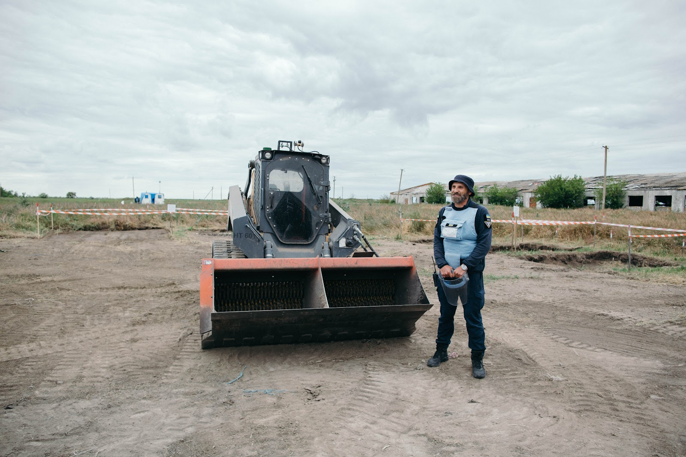
The loader’s cabin isn’t armored, but the operator usually controls it remotely from behind a shield. “But if someone is operating on the soil that’s already safe, they may sit in the cabin,” Oleksii explains. We are also warned: when it starts operating, we have to put on protective gear and move back to at least 50 meters.
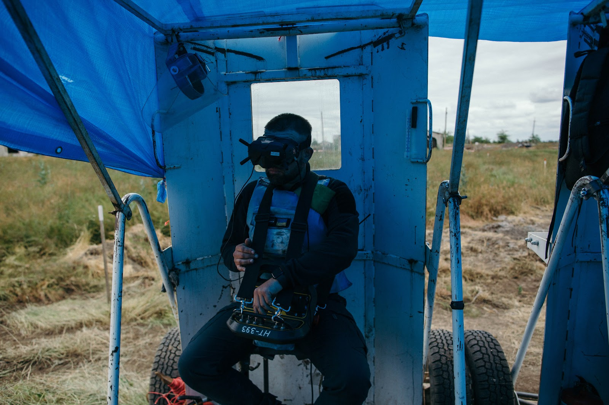
Operators of mechanical mine clearance have also been working from early morning: “The first shift starts at 6:20 and finishes at 13:15. We started working at 13:25 and will finish at 20:25.” They take every opportunity to make the most of the long summer days, even if the weather isn’t always good.
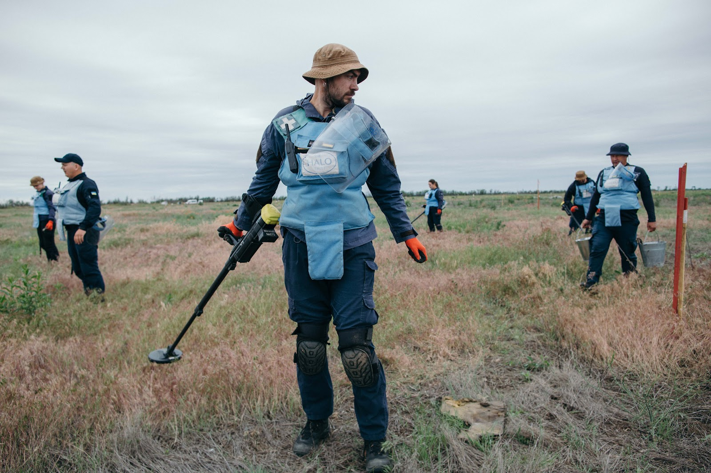
Many demining specialists are military veterans. They are usually less talkative. Deminer Oleksandr, for instance, stumbled upon a brochure about jobs at The HALO Trust at an Administrative Service Center while he was still serving. After his service, he decided to get a new job. There were considerably more challenges in the military, he says, so this job doesn’t scare him: there’s a hierarchy here similar to the military, and his stress resilience helps him cope with physical exertion.
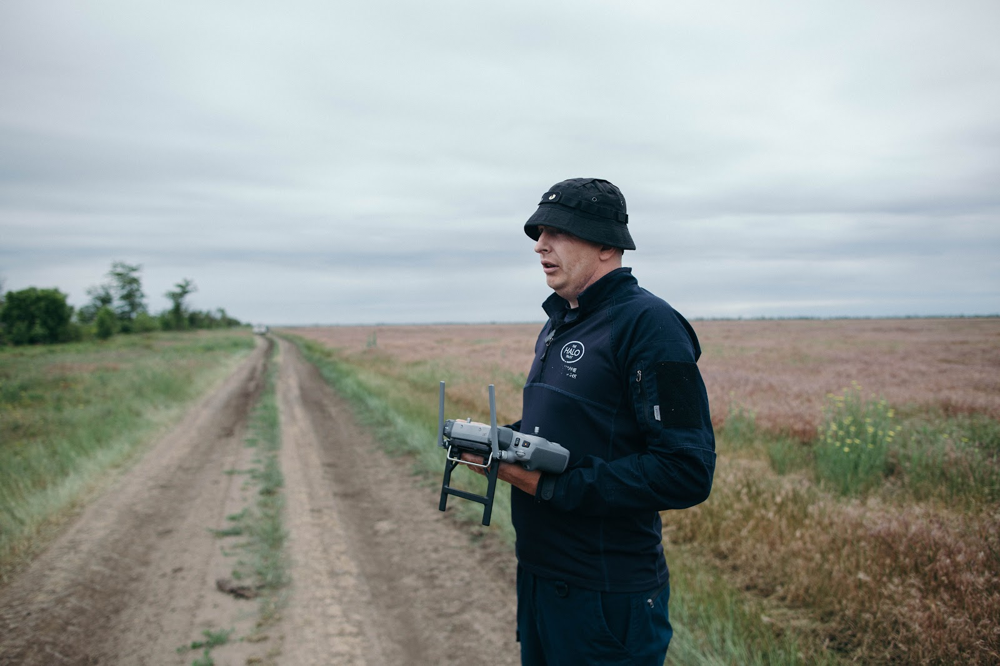
In the mine clearance process, drone operating skills are useful, so former military drone pilots are worth their weight in gold here. Rostyslav, the Remote Reconnaissance Department Supervisor, is one of them.
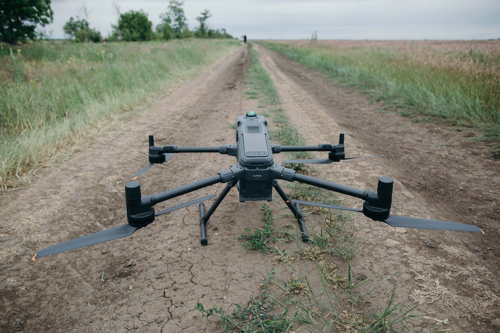
We come to watch him work during a break in the downpour: drones don’t fly during the rain. We are warned: only the road is currently safe to walk; stepping to the roadside, even a short distance, is dangerous. It’s closely monitored: anyone who deviates from the rules gets turned back to the road.
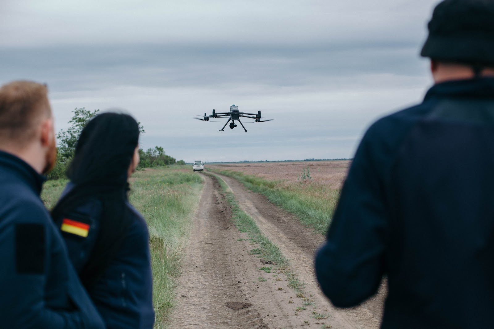
Rostyslav is currently teaching one of the teams how to use the DJI Matrice 400 drone to map the field: they plan the drone’s mission and upload it to the remote control. Each flight is approved by the military. The drone calculates the flight route, the time required, and the number of images to capture. “In this field, it will all take around two hours; it will be 4,500 images,” Rostyslav explains.
All these images will become part of an orthophotoplan of the plot — a large, detailed image of the field. It will take about 12 hours to process. Then, the experts analyze the image and determine which method to use to clear the area. Not only visual factors, but also the type of combat that took place here, are taken into account. Only later can one move to the demining itself — either manual or mechanical.
Mine clearance is an incredibly thorough process, even for small plots.
Before the full-scale invasion, a couple of hundred people lived in Vasylky. Now, there are destroyed houses and almost no inhabitants. The HALO Trust employees note that they rarely see locals here; only when someone comes to pick up their things. Public transport hasn’t been seen here for a long time, and it will take a couple of dozen minutes of driving a bumpy dirt road to get to the village; it was close to becoming an impossible task for our small hatchback. More experienced visitors don’t make this mistake and drive SUVs.
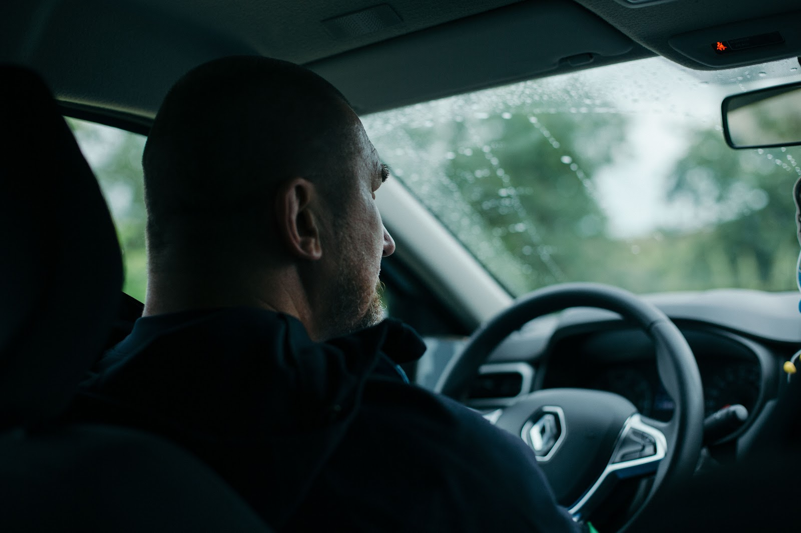
There still are farm fields, however. And they are a priority for the deminers. According to the 2025 data, around 132,000 square kilometers of Ukrainian territory are mined. In some media, calculations appear that it’ll take 750 years to demine Ukrainian territory. In reality, however, it’s all much more complicated.
“These numbers were calculated by the Tony Blair Institute. They simply multiplied 132,000 kilometers by time,” Olena Pareniuk, a radiobiologist and the coordinator of prioritizing humanitarian demining of Ukraine’s territory, says. In Ukraine, the situation is quite different.
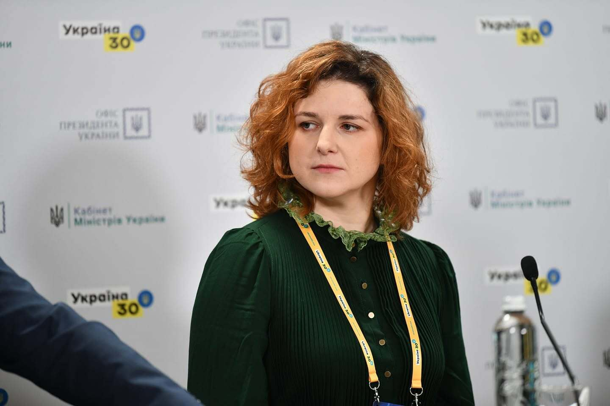
“International demining standards were drafted before the UGVs (unmanned ground vehicles — ed.), and drones appeared. Besides, no one was ever in a hurry: you’re clearing South Sudan at your own pace. But we can’t do it this way because if our operators don’t demine the areas, farmers will. In one of the southern regions, on 40% of the territories identified as dangerous, wheat is already growing: a farmer takes a mine, throws it to the roadside, and continues driving a tractor. It’s dangerous. But it’s a fact. It’s the reality we live in. And so we understand that we can’t play these children’s games. We have to do it more efficiently and quicker,” the scientist says.
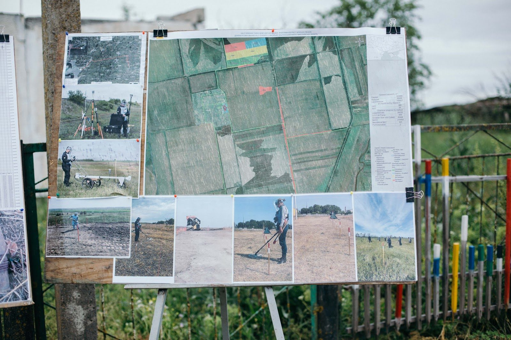
That’s why a prioritization system for demining has been developed. To this end, the area’s potential is assessed and compared with the time required to clear it.
There are three coefficients that influence the area’s potential: social, economic, and ecological. “The social coefficient relies on the number of social facilities located there and the social services they provide. The economic coefficient assesses how much income the area generates. The ecological coefficient decreases the economic one. For instance, a given area was generating 100 hryvnas in income before the war; then it was pockmarked with craters, military vehicles drove across it, and that amount of wheat just can’t grow there anymore. So we reduce the economic potential by the ecological coefficient. And divide it by the time needed for clearance,” Olena Pareniuk explains.
Then, a priority is determined: highest, if the area has a high potential and can be cleared quickly. Then it gets more complicated. There are areas with high potential that require a lot of time, or vice versa: the area can be cleared quickly, but isn’t as urgent. In these cases, the “quick” option is usually chosen, “to put the land into use so that it starts generating at least some income, instead of waiting for the really good area to be cleared.”
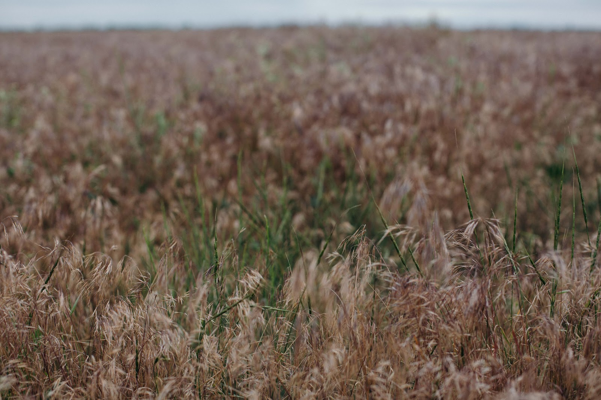
Ihor Bezkaravainyi, the Deputy Minister of Economy, Environment, and Agriculture of Ukraine, responsible for the humanitarian demining efforts, calls this system “a healthy distribution”: 80% are going to be cleared as quickly as possible, and the most polluted 20% of the territories will be left for last — to “rummage through them for decades, or maybe even centuries.”
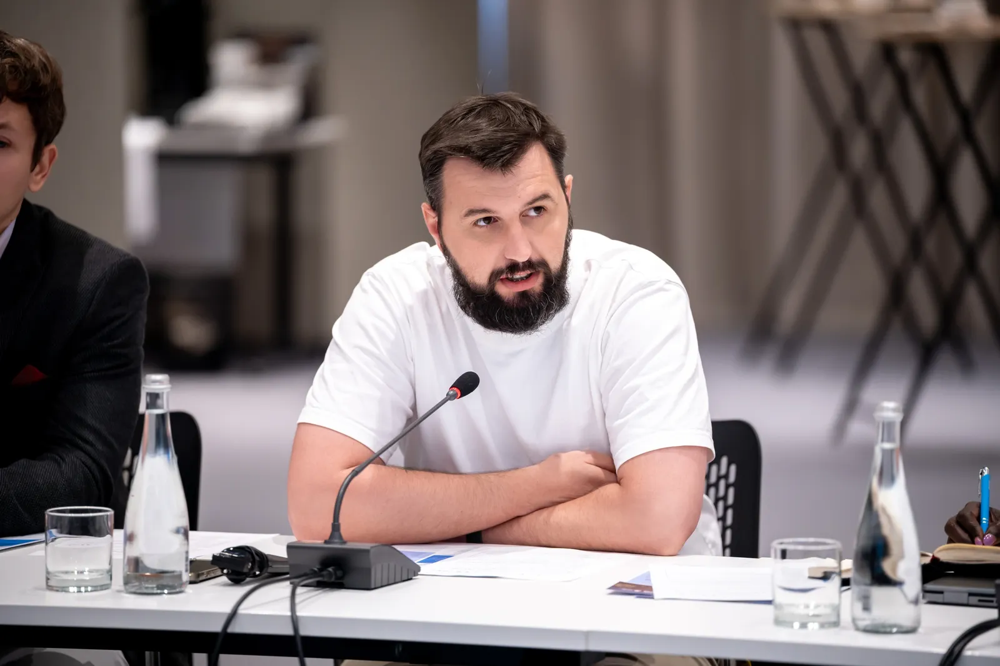
The pollution level of the area depends on multiple factors. Mainly, the location where the combat took place, the combat type, its intensity and duration, and the specifics of the terrain, he explains.
“At the front line, where nothing moved in four years, there are trenches and trees mixed with the soil; all sorts of things were thrown there. It’s impossible to process quickly. And in a field, where a convoy of vehicles passed through, or artillery was placed and then destroyed, it’s possible to do quicker: remove the burned vehicles and scattered projectiles that were dispersed by the detonation.”
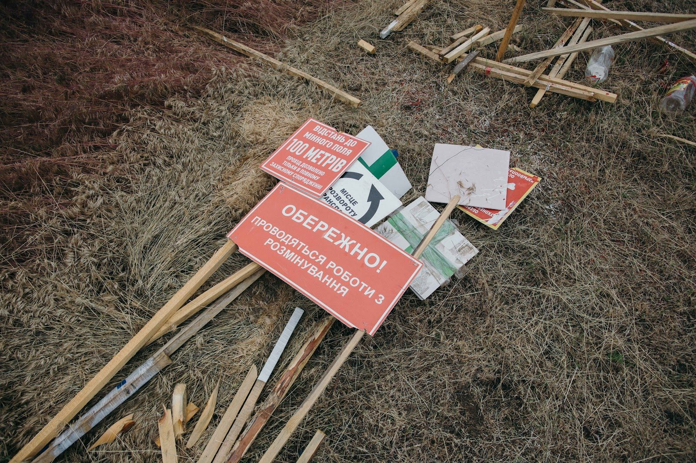
At the same time, the IMAS international standards used for demining all over the world are rather obsolete and not adapted to the type of combat and mine clearing happening in Ukraine. For instance, according to them, what is currently being done in Ukraine can’t be called humanitarian demining at all, because under international practice, such operations can only begin after combat has stopped. In Ukraine, though, we started clearing the fields for civilians during the active phase of war.
IMAS doesn’t take into account that the war itself is changing — for example, the drone utilization. “In most international regulatory documents, some drones are still categorized as IEDs — improvised explosive devices. But how can they be IEDs, if dozens, hundreds, thousands of ammunition and other things are produced for them? These things are mass-produced,” Ihor Bezkaravainyi adds.
Some plastic mines are categorized the same way — those that are cheap and simple to make, and are made on 3D printers. “It’s what Russians call ‘Prianik’²,” Ihor explains. “The biggest problem with them is that it’s very difficult to determine where they may be. For example, a drone was flying when it stumbled upon an ECM, or an optic cable snapped, and it fell. And there’s no technology to detect it. The most effective and trustworthy method is visual inspection. These are very high-resolution images that can be processed using computer vision to detect such dangerous objects based on their patterns. But there are many limitations: grass, autumn, water levels in bodies of water, etc. Which means, there are only specific time periods when it’s possible to do.”
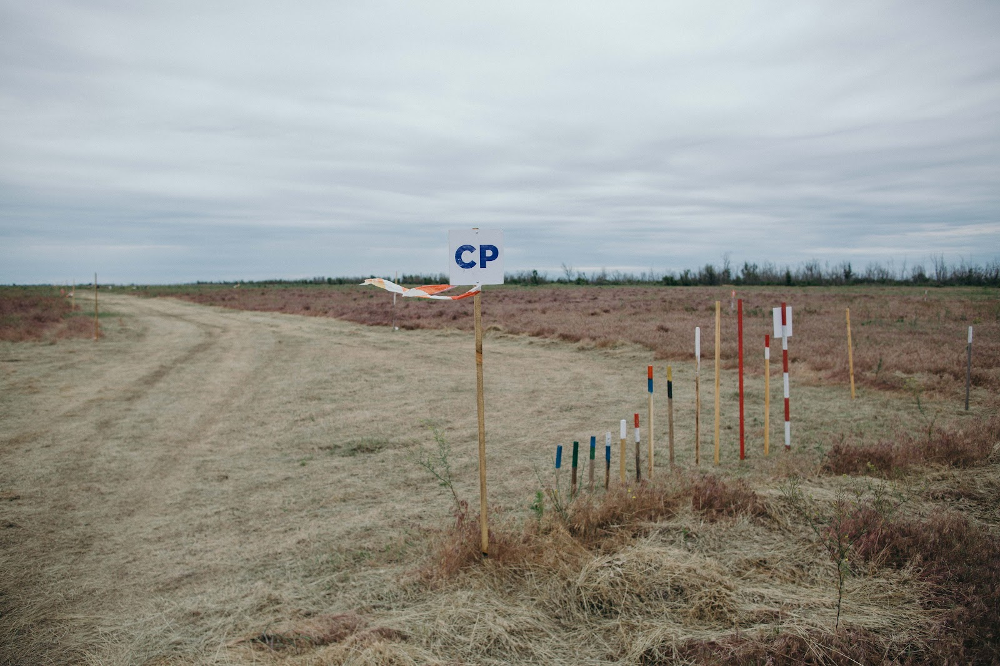
Developing a multi-tier prioritization system requires collecting large amounts of data from various institutions. A platform based on the software from tech giant Palantir stores and processes this data. It enables both using AI and updating it in real time: “If one of the databases is updated, ours gets updated as well,” Olena Pareniuk says.
“It’s an electronic ID of a plot of land. All the information we have is plotted geographically. We even have information on fish headcount. We open the ID and see that it’s two hectares of land, three fish live in it, four children go to school there, and there’s one mine. In this case, we don’t need to count everything in the same units. It’s enough for us to have this list. And then we make calculations using the algorithms developed by scientists. The economic index is defined in monetary value. The social index in number of services per 10,000 people. And the ecological in fertility loss [of the soil — transl.].”
Given Palantir’s controversial reputation, I ask about the protection of such sensitive data. Olena Pareniuk assures us that the company doesn’t have access to them. Many governments collaborate with the corporation — American, British — and it has all the required security certificates. One has to enter a couple of biometric data types to access the system. “There are two ‘white’ IP addresses in the civilian department of Palantir in Ukraine. It’s the Cabinet of Ministers and my kitchen,” she says with a smile. “Currently, we are using VPN so that we can access Palantir from more addresses. But without VPN, it’s the Cabinet of Ministers and my kitchen.”
Despite the complex prioritization system, key decisions are made by the local communities. “We offer our vision and explain the reasons. If the community says that we should clear the beach instead of the field, then we will clear the beach. Because it’s done for a purpose, for the Ukrainian people. And the people, these communities, have a decisive vote. Did we have situations where we considered a plot a priority, only to find out otherwise? Yes.”
In 2024, the government approved a humanitarian demining reimbursement program for farmers: they could apply and receive up to 80% reimbursement of expenses for clearing their land. Every demining operator could see the application on the Prozorro platform³; the best offer was accepted, the farmer paid the operator, and the operator submitted reimbursement documents. The program, however, didn’t function as expected.
“There was a hypothesis that farmers would agree to joint payment. Farmers said, ‘Don’t even count on it, we won’t be using it’ right away.” But the decision was political, and by September 2024, the state assumed responsibility for covering the full cost of the work. Then, the first trading was held — the market for humanitarian demining was launched. Not many small farms have used the mechanism, however.
There are a lot of problems. For example, earlier, only legal entities or individual entrepreneurs — those who had the right to work the land — could apply. Simple landowners couldn’t use the program.
“If a person just has a large garden, we didn’t have the right to clear it, because there was no entity submitting the initiative that would be eligible for the program. This way, we couldn’t clear a village where there were dozens of plot owners,” Ihor Bezkaravainyi explains. Currently, this norm has changed, and private owners can also apply to participate in the humanitarian demining program.
Similarly, because of the strictly defined list of users, the program didn’t include clearing forests.
“Currently, a revolution is underway: a cadastral parcel isn’t the smallest unit of account anymore,” the Deputy Minister says. A field is a collection of cadaster parcels. But a request can be submitted only to clear the entire field, even if it’s only partially mined. Law enforcement starts questioning it: why does the tender offer claim that the entire area needs to be cleared when, in fact, only part of it does? As a result, a criminal case may be filed and searches conducted, only to discover later that that’s how the system works.
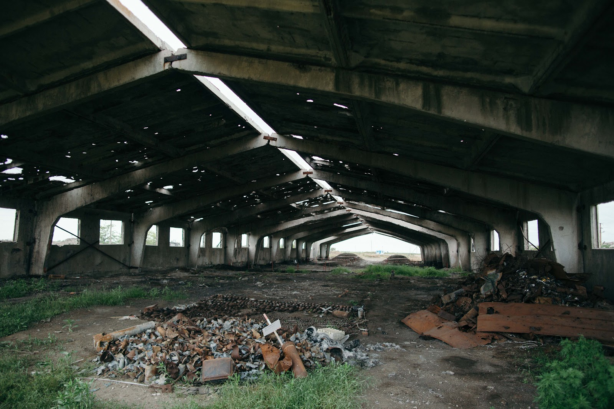
There are currently two criminal investigations: in the Kherson and the Kharkiv regions. For instance, in November, in the Kharkiv region, an investigator arrived at the field with two witnesses. “Not with experts, just with two witnesses,” Ihor emphasizes, “and a testimony was recorded that the field didn’t look like it underwent humanitarian demining. Humanitarian demining was completed in August. In September-October, the farmer plowed and sowed it before the next season. Now there’s a criminal case based on that testimony of the investigator and two witnesses; the searches were conducted, the documents were confiscated, etc.” Some humanitarian demining operators and international partners eventually refuse to work under these conditions.
But it’s not all bad. We shouldn’t sound the alarm and assume that everything in Ukraine is working inefficiently, Olena Pareniuk cautions. “Ukraine is the first country in the world to open a market for humanitarian demining. First of all, there weren’t such mined territories earlier, and second, the army did everything: a single agency assigned tasks, carried them out, and reported on them.” It’s much easier to control it like this.
Currently, there are about 130 humanitarian demining operators in Ukraine, as well as prompt response teams of the State Emergency Service and the State Transport Special Service. Even the National Police is working on clearing territories. The State Transport Special Service⁴ clears the roads; the police take action in populated areas; the State Emergency Service is responsible for operational demining and operates in the fields; and demining operators are allowed to search deeper and “sift the soil through a sieve.” “It’s extremely difficult to bring it all together,” Olena says.
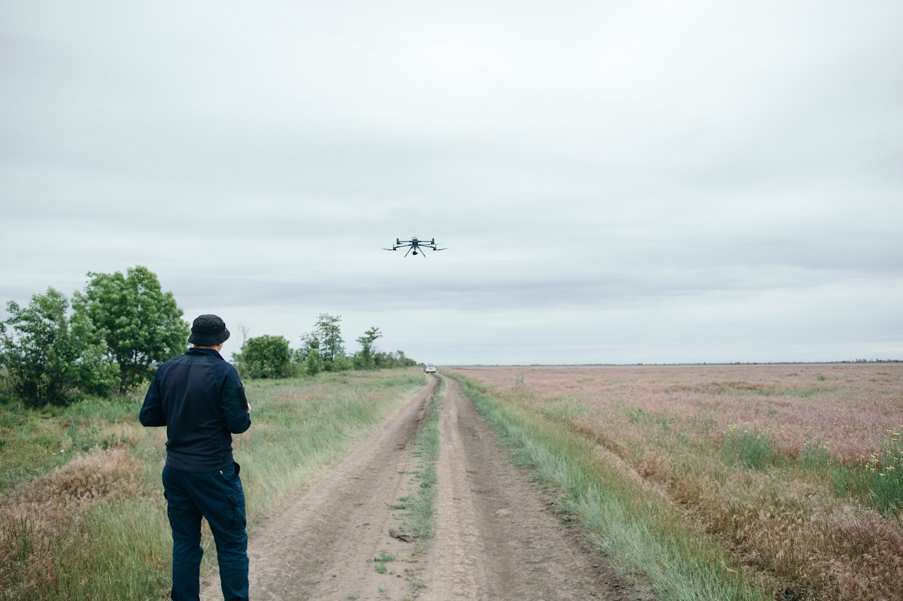
A large document is currently being drafted outlining legislative changes to address these issues. “It started with a short document, 15-20 pages long. Now, due to ongoing refinements, it has grown to 80 pages. It will clearly define who does what to avoid further criminal investigations. I hope it will finally be enough,” Ihor Bezkaravainyi adds.
Still, humanitarian demining, which is not quite humanitarian by international standards, yields results nonetheless. On our way to Vasylky, we notice fields covered with blue flax flowers. This wasn’t possible not so long ago. But thanks to Andrii, Rostyslav, Viktor, Oleksii, and hundreds of others who work from dawn till dusk to clear the land, life is returning here.
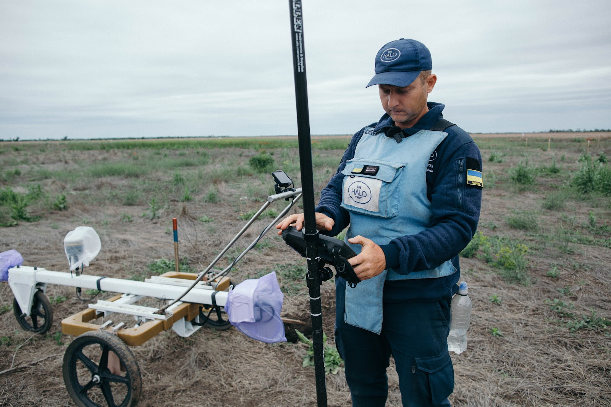
“I realize: it’s the future that I clear from consequences of the war with my own hands,” Andrii says. “I realize that it’s a danger for all of Ukraine. My dad is a farmer. I’ve been helping him since school: driving a tractor, sowing the fields, mowing the grass. I realize that, thanks to my team and me, the fields can be cleared, and in the coming days, the same farmers as my dad will work there. We will sow wheat and grow bread.”
Footnotes
1. Ochakiv is a town in the Mykolaiv region, currently very close to the front line.
2. Prianik (Ukr. prianyk) is a type of sweet baked good similar to gingerbread. Most often, they are small, round, and more or less flat, and the mine resembles them in its shape.
3. Prozorro is a governmental organization in Ukraine that is in charge of the eponymous public electronic procurement system.
4. The State Transport Special Service is a specialized military unit within the Ukrainian Armed Forces responsible for military logistics, including the removal of explosive materials from transportation infrastructure facilities.
The reportage is published with the support of the Alfred P. Sloan Foundation.